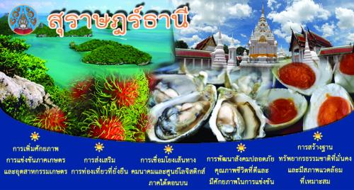

คำขวัญประจำจังหวัดสุราษณ์ธานี

เมืองร้อยเกาะ เงาะอร่อย หอยใหญ่ ไข่แดง แหล่งธรรมะ" ซึ่งสะท้อนถึงเอกลักษณ์โดดเด่นของจังหวัด ทั้งความสวยงามของเกาะแก่ง, เงาะพันธุ์ดี (เงาะโรงเรียนนาสาร), หอยนางรมขนาดใหญ่, ไข่เค็มไชยา และความอุดมสมบูรณ์ทางพุทธศาสนา.